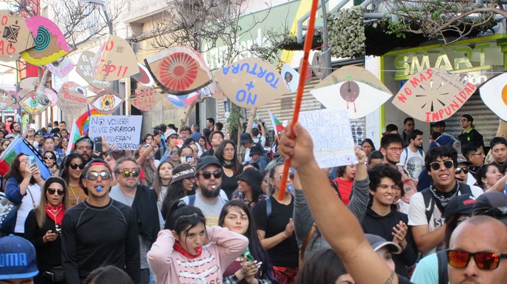
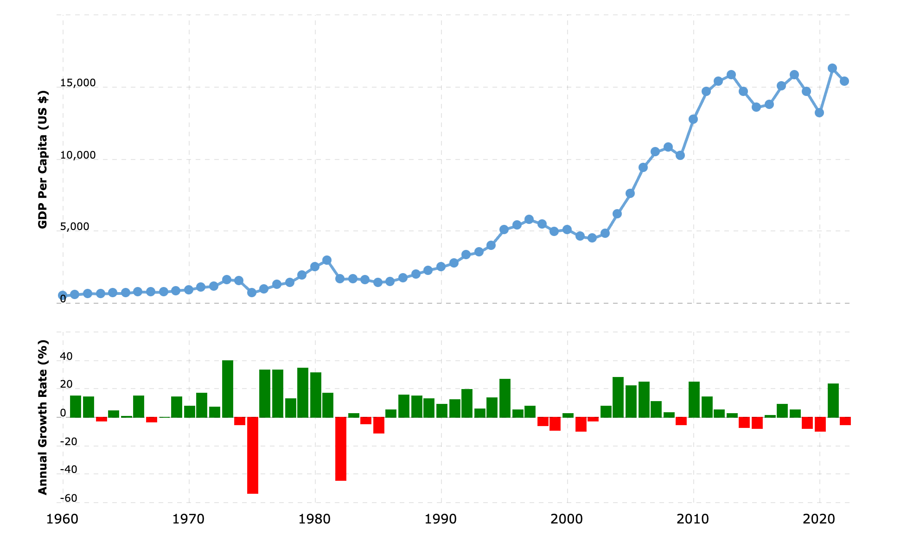

Chile's Wake-Up Call
Unpacking the 2019 Social Uprising and Its Lasting Impact
On October 18, 2019, Santiago's streets erupted in chaos. What began as a student-led protest against a metro fare increase (Borzutzky & Perry) quickly turned into the largest social uprising Chile had seen in decades. The chant "It's not 30 pesos, it's 30 years" echoed through the capital, encapsulating a profound discontent that ran far deeper than public transportation costs.
To understand why a 30-peso (about 4 cents USD) hike sparked such massive unrest, we need to delve into Chile's complex history and the limitations of its much-touted economic model. This blog post will explore how the 2019 Chilean protests reveal deep-rooted inequalities and offer crucial insights into contemporary Latin American issues.
Two Sides of Chile's Economic Growth
For decades, Chile has been known as Latin America's economic miracle. Following the brutal dictatorship of Augusto Pinochet (1973-1990), the country embraced free-market policies and experienced steady economic growth. International organizations frequently cited Chile as a model for development in the region. Even economist Milton Friedman coined the term “Miracle of Chile” for the successful growth seen in Chile's economy in the 1980s (source, year).
However, while Chile's economy did grow, so did its inequality. The benefits of this growth were concentrated only among a small elite, while many Chileans struggled with low wages, inadequate pensions, and limited access to quality education and healthcare. First hand accounts from the protestors themselves display the dissatisfied sentiment clearly.
“An unequal country, an exploited country, a country full of slaves, a sad country, a stressed country, a country with depression… You can't enjoy your retirement, you can't pay for health, you can't afford the education of your children.”
Unpacking the Uprising: More Than Economics
To truly understand the 2019 protests, we need to look beyond economic indicators. This is where insights from Latin American Studies helps us understand the social and historical aspect of the protests. The concepts discussed by a cultural theorist Stuart Hall and Peruvian sociologist Anibal Quijano offer a new viewpoint through which we can analyze Chile's situation.
Stuart Hall's work helps us get a better understanding of the inner workings of the Chilean protest. In his essay "The West and the Rest: Discourse and Power," Hall examines how Western societies have historically represented and understood non-Western cultures as inferior, and describes this to be creating a powerful discourse. As a foundation for his argument, Hall's concept of discourse is introduced by stating that discourse is "a way of talking… [that] produces knowledge that shapes perceptions and practice. It is part of the way in which power operates" (Hall, 1996, p. 201). This idea of discourse helps us view Chile's history and connect the past and current situations.
This leads to Hall's main argument that the discourse of "the West and the Rest" has created a contrast between Western and non-Western societies, often portraying the latter as less developed or civilized. He states, "The West produced many different ways of talking about itself and 'the Others.' But what we have called the discourse of 'the West and the Rest' became one of the most powerful and formative of these discourses" (Hall, 1996, p. 225).
Applying Hall's concept to Chile's situation, we can see how this discourse has influenced both internal and outer perceptions of the country. On the outside, Chile has long been hailed as Latin America's economic miracle reasoned with the country's adoption of neoliberal policies and steady economic growth. (author, year, p.##) This narrative aligns with the Western ideal of development and progress. However, as the 2019 protests revealed, this outer discourse blocked the outside world from being able to view the deep-seated inequalities known only to the people of Chile.
“People got tired of the bad distribution of the wealth, the natural resources, money, and everything that exists in the country. It's not about taking the rich's things so we can get everything for free. It's about making justice.”
Another point of view on the root cause for this uprising can be found through examining Quijano's "Coloniality of Power". In the text, Quijano argues that even after the end of formal colonialism, colonial power structures continue to exist in modern societies. These structures maintain underlying hierarchies based on race, class, and gender, shaping how resources and opportunities are distributed.
This helps explain the unbalanced distribution of wealth in Chile's economy despite the GDP continuously growing and guides us to a fundamental reason for economic inequalities inside Chile. From this analysis, we can see that the neoliberal model didn't directly create economic disparities. Rather, it reinforced existing social hierarchies from the colonial past that in turn led to economic disparities.
Conclusion: Lessons for Latin America and Beyond
The 2019 Chilean protests serve as a powerful case study to understand the real workings of modern Latin American societies and how interconnected the economy, society, and historical events really are. By applying the theoretical frameworks of Stuart Hall and Anibal Quijano, we gain crucial insights that go beyond surface-level economic analyses.
Hall's concept of discourse helps us understand how Chile's image as an economic "miracle" on the outside was very different from its internal realities. This discourse, rooted in Western ideals of development, obscured the deep-seated inequalities that were ultimately revealed through the Chilean protests. The uprising can be seen as a moment when the illusion cast by the dominant discourse was finally shaken up, bringing to light the "other Chile" that had long been overshadowed by economic statistics.
Quijano's "Coloniality of Power" provides a very important historical context that reveals that Chile's economic disparities are not simply the result of recent neoliberal policies, but rather resulted from power structures that continued its influence from the colonial era. This perspective helps explain why economic growth alone was insufficient to create true economic prosperity.
Overall, the story of Chile's awakening through the protest reminds us that progress can’t always be linear and be explained with simple charts showing economic growth. There is more nuance that must be considered to these models, specifically with considering equality inside economic growth. And a step back from the charts shows us how the power of collective action has opened the door for real change, demonstrating that societies must constantly work to address underlying inequalities and injustices.
Sources
- source 1
- source 2
- source 3
- ....